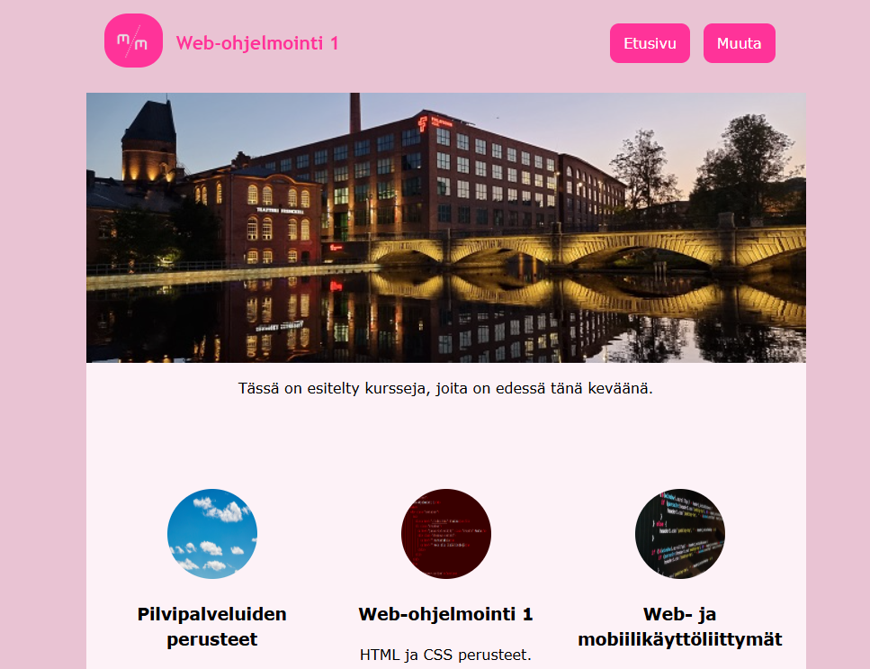
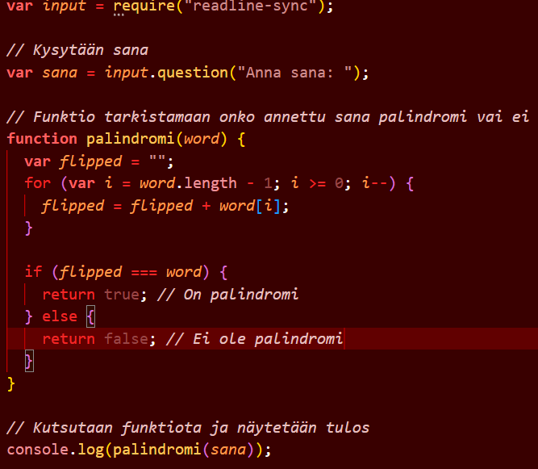
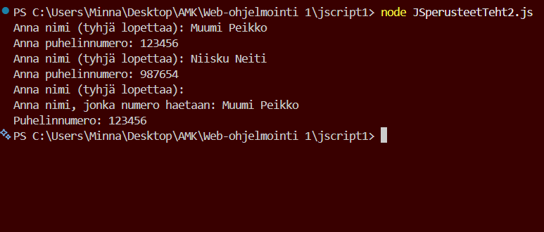
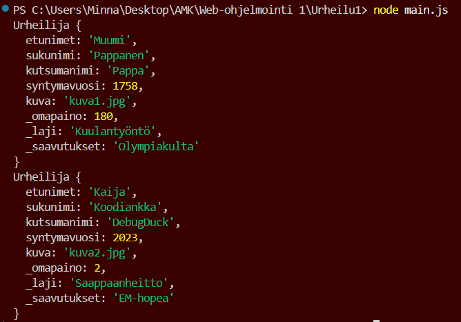
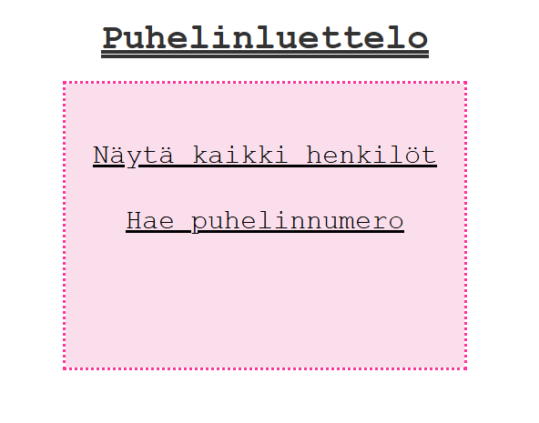
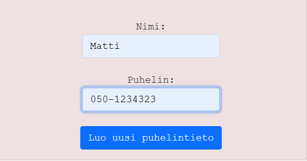

Tämä portfolio sisältää Web-ohjelmoinnin kurssilla tekemäni harjoitustehtävien kuvaukset ja screenshotteja niistä.
Kurssin aikana harjoiteltiin web-kehityksen perusteita, HTML- ja CSS-rakenteita, JavaScript-ohjelmointia sekä selain- ja
palvelinpuolen ohjelmien välistä toimintaa.
Sivuston pohjana on käytetty valmista Bootstrap-pohjaista layoutia (
Freelancer
), jota olen muokannut sopivaksi. Muokkasin sivun sisältöä, rakennetta ja ulkoasua muuttamalla valmiin teeman tekstejä
ja elementtejä. Bootstrapin avulla sivusta saatiin myös responsiivinen, eli se mukautuu eri kokoisille näytöille.





